ТЕХНИЧЕСКИЕ УКАЗАНИЯ
ПО УСТРОЙСТВУ ДОРОЖНЫХ
ПОКРЫТИЙ С ШЕРОХОВАТОЙ
ПОВЕРХНОСТЬЮ
ВСН 38-90
«ТРАНСПОРТ» 1990
СОДЕРЖАНИЕ
Утверждены Минавтодором РСФСР
1 февраля 1989 г.
ТЕХНИЧЕСКИЕ УКАЗАНИЯ
ПО УСТРОЙСТВУ ДОРОЖНЫХ
ПОКРЫТИЙ С ШЕРОХОВАТОЙ
ПОВЕРХНОСТЬЮ
ВСН 38-90
МОСКВА «ТРАНСПОРТ» 1990
Указания содержат требования к материалам и параметрам шероховатости дорожных поверхностей, обеспечивающих допустимые для безопасного проезда значения коэффициента сцепления, технологию устройства данных поверхностей и методы контроля качества работ.
Технические указания предназначены для инженерно-технических работников.
Технические указания разработаны под руководством и при участии канд. техн. наук А.Я. Эрастова, сотрудниками НПО Росдорнии - инж. Л.Г. Марьяхиным, Л.Г. Паниной, Б.Н. Уткиным при участии д-ра техн. наук, проф. А.П. Васильева, канд. техн. наук Ю.В. Кузнецова, М.В. Немчинова, Н.А. Лушникова, ннж Э.И. Янчевской, С.К. Актанова (МАДИ), канд. техн. наук А.А. Малышева, И.Н. Христолюбова (СибАДИ), канд. техн. наук О.А. Красикова и инж. Ф.К. Андриади (Казахский филиал Союздорнии), канд. техн. наук Т.А. Шилакадзе (НПО Груздорнаука), канд. техн. наук М.П. Костельова и инж. Л.М. Посадского (Ленинградский филиал Союздорнии), инж. И.А. Орехова (НПО Дорстройтехника).
Ответственный за выпуск Л.Г. Марьяхин
Заведующий редакцией Л.П. Топольницкая
Редактор Л.Н. Пустовалова
Выпущено по заказу Министерства автомобильных дорог РСФСР
|
Министерство автомобильных дорог РСФСР |
Ведомственные строительные нормы |
ВСН 38-90 |
|
Технические указания по устройству дорожных покрытий с шероховатой поверхностью |
Взамен «Технических указаний по устройству дорожных покрытий с шероховатой поверхностью» ВСН 38-77 |
1.1. Одним из главных способов повышения сопротивления дорожного покрытия скольжению шины, т.е. обеспечения требуемых значений коэффициента сцепления1, является создание шероховатой поверхности.
______________
1 Коэффициентом сцепления называют отношение реактивной силы, действующей на колесо автомобиля в плоскости его контакта с покрытием, к вертикальной нагрузке, передаваемой колесом на покрытие.
1.2. Шероховатой называют поверхность дорожного покрытия, образуемую равномерно чередующимися выступами скелетных частиц и впадинами между ними, а также собственной шероховатостью выступов и впадин либо специально созданными бороздками на поверхности покрытия.
Шероховатость, создаваемую скелетными частицами (зернами), называют макрошероховатостью. Собственную шероховатость зерен называют микрошероховатостыо.
1.3. Макрошероховатость (далее по тексту «шероховатость») покрытия характеризуют тремя основными параметрами:
средней высотой выступов Rz, мм;
средней глубиной впадин Hср, мм;
коэффициентом шага шероховатости
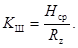
Порядок определения указанных параметров изложен в приложении 3.
1.4. Макрошероховатые покрытия, имеющие Kш > 0,5, называются макрошлифованными.
1.5. Классификация дорожных покрытий2 в зависимости от значений параметров шероховатости приведена в табл. 1.1.
________________
2 Классификация дорожных покрытий по шероховатости впервые предложена Л.Г. Паниной, Л.Г. Марьяхиным, А.Я. Эрастовым, А.П. Васильевым.
|
Внесены Московским научно-производственным центром НПО Росдорнии Минавтодора РСФСР |
Утверждены Министерством автомобильных дорог РСФСР |
Срок введения 1 января 1991 г. |
Таблица 1.1
|
Тип шероховатых покрытий |
Условные |
Параметры шероховатости |
|
|
Средняя высота выступов Rz, мм |
Средняя глубина впадин Hср, мм |
||
|
Гладкие |
Гл |
> 0,1 £ 0,5 |
> 0,02 £ 0,25 |
|
Мелкошероховатые |
Мшер |
> 0,5 £ 3,0 |
> 0,25 £ l,5 |
|
Мелкошипованные |
Мшип |
|
> l,5 £ 2,5 |
|
Среднешероховатые |
Сшер |
> 3,0 £ 6,0 |
> l,0 £ 3,0 |
|
Среднешипованные |
Сшип |
|
> 3,0 £:5,0 |
|
Крупношероховатые |
Кшср |
> 6,0 £ 9,0 |
> 2,0 £ 4,5 |
|
Крупношипованные |
Кшип |
|
> 4,5 £ 7,0 |
2.1. Минимально допустимые в течение всего срока службы значения коэффициентов продольного сцепления и средней глубины впадин шероховатости приведены в табл. 2.1.
Таблица 2.1
|
Условия движения |
Коэффициент сцепления |
Средняя глубина впадин макрошероховатости Hср, мм, для дорог в различных дорожно-климатических зонах |
||
|
I и V |
II-IV |
|||
|
Легкие |
Участки прямые или кривые радиусом 1000 м и более, горизонтальные или с продольным уклоном не более 30 ‰, с элементами поперечного профиля, установленными для дорог соответствующих категорий и с укрепленными обочинами без пересечений в одном уровне и примыкании, при коэффициенте загрузки не более 0,3 |
0,28 |
0,30 (0,60) |
0,35 (0,70) |
|
Затрудненные |
Участки на кривых в плане с радиусами 250 - 1000 м; на спусках и подъемах с уклонами от 30 до 60 ‰. Участки в зонах сужений проезжей части (при реконструкции), а также участки дорог, отнесенные к легким условиям движения, при коэффициенте загрузки 0,3 - 0,5 |
0,30 |
0,35 (0,70) |
0,40 (0,80) |
|
Опасные |
Участки с видимостью менее расчетной (для соответствующих категорий дорог); на спусках и подъемах с уклонами более 50 ‰ при длине более 100 м; участки в зонах пересечений в одном уровне, а также участки, отнесенные к легким и затрудненным условиям при коэффициенте загрузки свыше 0,5 |
0,32 |
0,40 |
0,45 |
Примечания. 1. Сцепные качества покрытий следует считать удовлетворительными при условии соблюдения обоих параметров. Без скобок приведены значения для шероховатых, в скобках - для шипованных поверхностей.
2. Коэффициент сцепления следует измерять при следующих нормированных условиях (в соответствии с Государственным реестром Госстандарта № 10912-87 и 10913-87):
скорость скольжения полностью заблокированного измерительного колеса должна быть (60 ± 3) км/ч;
вертикальная нагрузка на измерительное колесо должна быть (2913 ± 50) Н;
измерительное колесо должно быть оборудовано шиной с протектором без рисунка (гладкая шина) размером 6,45 - 13 при внутреннем давлении воздуха в шине (0,17 ± 0.1) МПа;
дорожное покрытие должно быть искусственно увлажнено, при этом расход воды должен быть таким, чтобы обеспечить на покрытии расчетную пленку воды толщиной 1 мм (под «расчетной пленкой» следует понимать условную величину, являющуюся отношением расхода воды к площади увлажнения).
2.2. Для дорог I категории, а также трехполосных дорог, расположенных на европейской территории СССР, допустимую макрошероховатость, установленную по табл. 2.1, проверяют по условиям удаления воды из зоны контакта шины с покрытием по методике, изложенной в приложении 4.
2.3. Начальную макрошероховатость покрытия (т.е. шероховатость в момент сдачи дороги в эксплуатацию после строительства или ремонта) назначают в зависимости от условий движения, категории дороги, климатического района и применяемого способа устройства шероховатости.
2.4. Для обеспечения безопасности движения встречных автомобилей на двухполосных дорогах и движущихся по смежным полосам многополосных дорог, а также при съездах автомобилей на укрепительные полосы или прикромочные зоны обочин изменение коэффициента сцепления в поперечном профиле дорожного полотна не должно превышать 0,10.
2.5. Во избежание усиления вибрации автомобилей во время движения расстояние между соседними выступами макрошероховатости не должно быть более 40 мм.
3.1. Методы устройства различных типов шероховатых поверхностей на покрытиях приведены в табл. 3.1.
Таблица 3.1
|
Типы шероховатости дорожных покрытий (по табл. 1.1) |
Методы устройства шероховатых поверхностей на покрытиях |
|||
|
цементобетонных |
||||
|
при новом строительстве |
в процессе эксплуатации |
при новом строительстве |
в процессе эксплуатации |
|
|
1 |
2 |
3 |
4 |
5 |
|
Мелкошипованные (Мшип) |
1. Устройство верхнего слоя покрытий из асфальтобетонов типов Б, Бх, Г и типа Дх с использованием в смесях щебня и дробленого песка из труднополирующихся горных пород или щебня разной прочности |
Обработка поверхности свежеуложенного бетона специальными щетками поперек проезжей части |
1. Обработка поверхности покрытия высокотемпературным пламенем, кислотой или другими химическими веществами |
|
|
|
2. Поверхностная обработка битумным щебеночным шламом с содержанием до 40 % щебня размером менее 15 мм |
|
2. Поверхностная обработка с применением эпоксидного вяжущего и дробленого песка из труднополирующихся горных пород |
|
|
|
3. Втапливание черного щебня размером до 15 мм в количестве 7 - 10 кг/м2 в поверхность слоя асфальтобетона типов В, Вх или Дх |
- |
- |
|
|
|
4. Устройство слоя износа из песчано-резинобитумных смесей по ТУ 218 РСФСР 596-88 |
- |
- |
|
|
Мелкошероховатые (Мшер) |
1. Устройство верхнего слоя покрытия из горячего или теплого асфальтобетона типа А с содержанием в смеси 50 - 65 % щебня из труднополирующихся горных пород размером до 15 мм |
1. Втапливание прочного щебня размером до 15 мм в поверхность свежеуложенного бетона1 |
1. Нарезка бороздок в поверхностном слое покрытия алмазными дисковыми нарезчиками |
|
|
|
2. Устройство верхнего слоя покрытия из открытых битумоминеральных смесей по ТУ 218 РСФСР 601-88 с содержанием в смеси 55 - 65 % щебня размером до 15 мм |
2. Устройство двухслойных цементобетонных покрытий с верхним слоем из специально подобранных смесей бетона с цементным раствором пониженной прочности и щебнем из труднополирующихся горных пород1 |
- |
|
|
|
3. Поверхностная обработка с применением битума, эмульсий и мелкого щебня размером до 15 мм |
- |
- |
|
|
Среднешипованные (Сшил) |
1 Втапливание черного щебня размером 15 - 20 или 20 - 25 мм в количестве 9 - 12 кг/м2 в поверхность слоя асфальтобетона типов В, Вх или Дх |
- |
- |
|
|
|
2. Устройство верхнего слоя из открытых битумоминеральных смесей по ТУ 218 РСФСР 601-88 с использованием щебня размером до 20 мм в количестве 55 - 65 % |
- |
- |
|
|
|
3. Поверхностная обработка щебеночным битумным шламом с использованием щебня размером 15 - 20 мм в количестве до 40 % |
- |
- |
|
|
Среднешероховатые (Сшер) |
1. Поверхностная обработка с применением битума (в том числе улучшенного различными добавками) или эмульсии и щебня размером 15 - 20 мм (в том числе разнопрочного) |
Втапливание прочного щебня размером до 20 мм в поверхность свежеуложенного бетона1 |
Устройство верхнего слоя из открытых битумоминеральных смесей по ТУ 218 601-88 с использованием щебня размером до 20 мм в количестве 66 - 85 % |
|
|
|
2. Поверхностная обработка битумным шламом с использованием щебня размером до 20 мм в количестве не менее 55 % |
- |
- |
|
|
|
3. Устройство верхнего слоя из открытых битумоминеральных смесей по ТУ 218 РСФСР 601-88 с использованием щебня размером до 20 мм в количестве 66 - 85 % |
- |
- |
|
|
|
Втапливание черного щебня размером 20 - 25 мм в количестве 9 - 12 кг/м2 в поверхность слоя асфальтобетона типов В, Bх или Дх |
- |
Устройство верхнего слоя из открытых битумоминеральных смесей по ТУ 218 РСФСР 601-88 с использованием щебня размером до 25 мм в количестве 55 - 65 % |
|
|
Крупношипованные (Кшип) |
1. Устройство верхнего слоя из открытых битумоминеральных смесей по ТУ 218 РСФСР 601-88 с использованием щебня размером до 25 мм в количестве 65 - 85 % |
- |
1. Устройство верхнего слоя из открытых битумоминеральных смесей по ТУ 218 РСФСР 601-88 с использованием щебня размером до 25 мм в количестве 65 - 85 % |
|
|
Крупношероховатые (Кшер) |
2. Поверхностная обработка с применением битума (в том числе улучшенного различными добавками) и щебня размером 20 - 25 мм (в том числе и разнопрочного) |
- |
2. Двойная поверхностная обработка с применением резинобитумного вяжущего и черного щебня размером 20 - 25 мм для нижнего слоя и 15 - 20 мм для верхнего |
|
___________________
1 Указанные методы следует рассматривать как перспективные. Во избежание увеличения уровня шума от проезжих автомобилей крупношероховатые поверхности не следуют применять в пределах населенных пунктов.
3.2. Тип шероховатой поверхности (см. табл. 1.1) назначают в зависимости от категории дороги:
для I категории - Сшер или Кшер;
» II » - Сшер, Кшер, или Мшер;
» III » - Сшер, Кшер, Мшер или Кшип, Сшип;
» IV и V » -Кшер, Сшер, Кшип, Сшип, Мшер, Мшип.
3.3. При создании шероховатой поверхности способом поверхностной обработки необходимо выполнять следующие условия:
применять щебень узких фракций: 5 - 10, 10 - 15, l5 - 20, 20 - 25 мм. При выборе той или иной фракции щебня необходимо учитывать твердость покрытия (приложение 5). На дорогах I и II категорий щебень фракций 5 - 10 и 10 - 15 мм разрешается использовать при условии добавления к вяжущему стабилизирующих полимеров;
в районах с зимними расчетными условиями движения автомобилей следует применять щебень, обработанный органическими вяжущими преимущественно фракций 15 - 20, 20 - 25 мм.
3.4. На асфальтобетонных и других черных покрытиях следует устраивать, как правило, одиночную поверхностную обработку, а на эксплуатируемых цементобетонных покрытиях - двойную.
Поверхностные обработки на эмульсиях прямого типа ЭБА-1 и ЭБA-2 устраивают на дорогах II - IV категорий.
3.5. Устройство шероховатой поверхности с применением горячих и теплых асфальтобетонных смесей с повышенным содержанием щебня следует предусматривать на автомобильных дорогах I - III категории.
Возможность использования этого способа во многом определяется наличием в районе производства работ прочных каменных материалов с высоким сопротивлением шлифующему воздействию автомобильных шин. При отсутствии таких материалов целесообразны другие методы, например, использование асфальтобетона на основе разнопрочных каменных материалов.
3.6. Метод втапливания щебня в укладываемый верхний слой дорожной одежды следует применять на дорогах I - III категорий. Составы и физико-механические свойства асфальтобетонных смесей, в которые втапливают щебень, должны соответствовать требованиям ГОСТ 9128-84.
3.7. На дорогах III и IV категорий рекомендуется поверхностная обработка покрытий битумными шламами.
3.8. При новом строительстве цементобетонных покрытий предпочтение следует отдавать обработке их поверхности щетками или устройству верхнего слоя из специально подобранных смесей бетона. Второй метод целесообразно применять в случаях отсутствия в районе строительства прочных каченных материалов с высоким сопротивлением шлифующему воздействию шин Необходимо учитывать, что втапливание прочного щебня в поверхность свежеуложенного бетона может быть эффективным лишь при применении специальных машин.
Щебень из природных горных пород
4.1. Щебеночные материалы получают дроблением природных горных пород, отвечающих требованиям, приведенным в табл. 4.1.
Для получения щебня могут быть использованы соответствующие горные породы, добытые при разработке рудных и других месторождений (хвосты), отвечающие требованиям, приведенным в данном разделе.
4.2. Отдельные зерна щебня должны по возможности иметь кубовидную форму, быть трудношлифуемыми и чистыми (без пленки пыли или грязи).
Таблица 4.1
|
Горные породы |
Петрографические особенности |
Марки по ГОСТ 8267-82 |
Примечание |
|
|
по износу |
по прочности |
|||
|
Изверженные |
Кристаллические без следов выветривания |
И-I |
1200 |
На дорогах всех категорий |
|
Изверженные |
Породы с кристаллической и порфировой структурой |
И-II |
1000 |
На дорогах II - IV категорий |
|
Метаморфические |
Породы с кристаллической структурой без следов выветривания |
И-I |
1200 |
На дорогах всех категорий |
|
Осадочные |
Породы с явно выраженной зернокристаллической структурой без следов выветривания |
И-II |
1000 |
На дорогах III, IV категорий |
4.3. Щебень для устройства шероховатых покрытии должен по крупности отвечать требованиям ГОСТ 8267-82 «Щебень из естественного камня для строительных работ». При устройстве шероховатых покрытий его необходимо рассортировать по крупности зерен определенных сортов, приведенных в табл. 4.2.
Таблица 4.2
|
Назначение |
Размер щебня, мм |
|
|
рекомендуемый |
допускаемый |
|
|
Асфальтобетонные каркасные |
3 - 10 и 10 - 15 или 3 - 15 |
3 - 10 и 10 - 20 или 3 - 20 |
|
смеси |
5 - 10 и 10 - 15 или 5 - 15 |
5 - 10 и 10 - 20 или 5 - 20 |
|
Поверхностная обработка: |
|
|
|
верхний слой |
10 - 12; 12 - 15; 15 - 20; 20 - 25 |
10 - 15; 5 - 10*; 15 - 20: 20 - 25 |
|
нижний слой |
15 - 20; 20 - 25 |
15 - 20; 20 - 25 |
|
Втапливание щебня |
10 - 12; 12 - 15; 15 - 20 |
10 - 15; 5 - 10*; 15 - 20 |
|
Щебень, обработанный вяжущим |
5 - 25; 5 - 40 |
3 - 40 |
|
Битумоминеральные открытые смеси |
5 - 10 (15); 10 - 20; 10 - 25 |
5 - 20; 5 - 25 |
_____________
* Допускаются на дорогах III и IV категорий.
4.4. Зерновой состав щебня каждого сорта по крупности или смеси нескольких сортов по размеру должен находиться в пределах, указанных в табл. 4.3.
Таблица 4.3
|
Массовая доля остатка на ситах, % |
||
|
0,5(Д наим + Д наиб) |
Д наим для одного сорта |
95 - 10 40 - 70 |
|
|
Для смеси Д наиб |
50 - 70 0 - 5 |
|
1,25Днаи6 |
- |
0 |
4.5. Массовая доля в щебне слабых и выветренных зерен должна быть не более 10 %, а зерен пластинчатой формы - не более 15 %.
4.6. Массовая доля в щебне пылевато-глинистых частиц, определяемых отмучиванием, не должна превышать 1 %; содержание глины в виде комков и посторонних засоряющих примесей не допускается.
4.7. По морозостойкости щебень для шероховатых покрытий должен удовлетворять требованиям, приведенным в табл. 4.4.
Таблица 4.4
|
Категория дороги |
|||
|
суровые |
умеренные |
мягкие |
|
|
I |
Мрз 50 |
Мрз 50 |
Мрз 25 |
|
II - III |
Мрз 50 |
Мрз 50 |
Мрз 25 |
|
IV |
Мрз 50 |
Мрз 50 |
Мрз 25 |
4.8. Для устройства поверхностной обработки из разнопрочного щебня применяют в качестве прочного и слабого компонентов щебень, отвечающий требованиям табл. 4.5.
Таблица 4.5
|
Горные породы |
Марка щебня по прочности |
Марка щебня по износу |
||
|
прочного |
слабого |
прочного |
слабого |
|
|
Изверженные |
1200 1000 |
800 600 |
И-I И-II |
И-III И-IV |
|
Метаморфические |
1200 1000 |
800 600 |
И-I И-II |
И-III И-IV |
|
Осадочные |
1000 - |
800 600 |
И-I - |
И-II И-IV |
|
Осадочные карбонатные |
800 600 |
- |
И-II И-III |
- - |
4.9. Содержание слабого компонента в смеси разнопрочного щебня допускается не более 50 %.
4.10. Допускается применение щебня из гравия марки Др. 8 и Др. 12 по дробимости, И-I и И-II пo износу как одного из прочных и марки Др. 16 и Др. 20 по дробимости, И-III и IV по износу в качестве одною из слабых компонентов
4.11. При испытании на морозостойкость непосредственным замораживанием применяемые сорта щебня должны выдерживать 50 циклов в умеренных и 25 в мягких климатических условиях (см. табл. 4.4).
4.12. Смесь разнопрочного щебня не должна содержать пылеватых частиц более 1 % и зерен пластинчатой (лещадной) и игловатой формы более 15 %.
4.13. Для асфальтобетонных смесей на основе разнопрочных каменных материалов применяют прочный щебень, отвечающий требованиям ГОСТ 9128-84, и малопрочный щебень, отвечающий требованиям ТУ 218 РСФСР 541-85.
Щебень из гравия
4.14. Для строительства дорожных покрытий с шероховатой поверхностью допускают применение щебеночного материала, полученного путем дробления гравийного материала, отвечающего требованиям ГОСТ 10260-82 (табл. 4.6).
Таблица 4.6
|
Марка щебня из гравия |
Применение |
Марка щебня из гравия |
Применение |
||
|
по износу в полочном барабане |
по дробимости в цилиндре |
по износу в полочном барабане |
по дробимости в цилиндре |
||
|
И-I |
Др 8 |
На дорогах всех категорий |
И-II |
Др 12 |
На дорогах III и IV категории |
4.15. Щебень из гравия должен содержать только дробленые зерна при этом массовая доля зерен из карбонатных пород не должна превышать 20 %.
Дроблеными считают зерна, поверхность которых околота более чем наполовину.
4.16. Щебень из гравия по размерам, соотношению зерен различной крупности, содержанию зерен пластинчатой формы, загрязняющих и посторонних примесей должен соответствовать щебню из природных массивных пород, требования к которому приведены в пп. 4.4 и 4.5.
4.17. Щебень из гравия подразделяют по прочности, как указано в табл. 4.1, при массовой доле зерен соответствующей группы горных пород более 50 %.
4.18. Щебень из гравия ввиду наличия в его составе зерен различных пород и зернистости, характеризующихся различной износостойкостью, считают наиболее желательным минеральным материалом к применению для устройства слоев износа. Однако массовая доля зерен кремнистых пород в щебне из гравия не должна превышать 25 %.
4.19. По морозостойкости щебень из гравия должен отвечать тем же требованиям, что и щебень из природных массивных горных пород (см. табл. 4.4).
Щебень из шлаков
4.20. Шлаковый щебень может быть изготовлен из всех видов шлаков, устойчивых против любого распада путем дробления и сортировки отвальных шлаков. Он должен отвечать требованиям ГОСТ 10260-82. Марку щебня выбирают в соответствии с требованиями табл. 4.7.
Таблица 4.7
|
Структурные особенности шлаков |
Марка щебня |
Примечание |
|
|
по износу |
по прочности |
||
|
Преимущественно кристаллические и скрытокристаллические, мелкопористые |
И-I |
1200 |
На дорогах всех категорий |
|
То же от мелко- до среднепористых |
И-II |
1000 |
На дорогах II - IV категории |
4.21. Шлаковый щебень не должен содержать металлических примесей более 5 % по массе.
4.22. Шлаковый щебень по крупности, зерновому составу, морозостойкости и другим требованиям должен соответствовать щебню из природных горных пород.
Природный песок
4.23. Песок природный должен отвечать требованиям ГОСТ 8736-85. Применим он для шероховатых покрытий только при отсутствии дробленого песка.
4.24. Песок для устройства шероховатых покрытий должен быть чистым и массовая доля в нем пылевидных, глинистых и илистых частиц не должна превышать 3 %. В этом количестве массовая доля глины не должна быть более 0,5 %. Массовая доля в песке зерен, проходящих через сито с сеткой № 014, не должна превышать 10 %.
Дробленый песок
4.25. Для устройства шероховатых покрытий наиболее целесообразно применение дробленых песков. Дробленый песок должен иметь петрографическую и минералогическую характеристики горной породы, из которой он изготовлен, с обязательным указанием количества в нем минералов, содержащих серу и слюду.
4.26. Для строительства шероховатых покрытий применяют дробленый песок марки 800, отвечающий требованиям ГОСТ 8736-85. Дробленый песок марки 800 изготовляют из изверженных, метаморфических и кристаллических (плотных) осадочных пород марки по прочности не ниже 800 по ГОСТ 8267-82 или из гравия с показателем дробимости выше Др. 8 (ГОСТ 8268-82). В применяемых для дробления в песок горных пород массовая доля слабых и выветренных разновидностей не должна превышать 10 %. Для асфальтобетонов типа Г применяют дробленый песок, получаемый при дроблении изверженных пород марки не ниже 1000.
4.27. Дробленый песок должен быть изготовлен с использованием специального дробильного оборудования, обеспечивающего получение зерен формы, приближающейся к кубической. Массовая доля зерен, проходящих сквозь сито № 014, не должна превышать 10 %. Массовая доля пылевидных и глинистых частиц, определяемых отмучиванием, в дробленом песке не должна превышать 5 %, в том числе глины 0,5 %. Дробленый песок не должен иметь посторонних примесей.
4.28. Дробленый песок может быть изготовлен также из отходов дробления горных пород (высевки) или гравия при производстве щебня. В этом случае, за исключением требования в п. 4.21 об использовании специального оборудования, он должен отвечать всем требованиям, приведенным в данном разделе.
Минеральный порошок
4.29. Минеральный порошок представляет собой продукт тонкого измельчения, известняков, доломитов, доломитизированных известняков и других карбонатных горных пород, отвечающих требованиям ГОСТ 16557-78, а также тонкого измельчения некарбонатных пород и пылевидных отходов промышленности, отвечающих специальным техническим условиям. Минеральные порошки применяют для изготовления асфальтобетонных смесей.
4.30. Минеральные порошки подразделяют на активированные и неактивированные. Для строительства дорожных покрытий с шероховатой поверхностью предпочтительны активированные порошки.
4.31. Минеральный порошок должен быть сухим и рыхлым. Активированный минеральный порошок должен быть однородным по цвету. Различие в массовой доле активирующей части в пробах порошка, отобранных из каждой партии, не должно превышать ± 0,l5 %.
4.32. Минеральный порошок по ГОСТ 16557-78 должен отвечать требованиям, приведенным в табл. 4.8.
Таблица 4.8
|
Показатели |
Нормы по видам порошка, % |
|
|
Активированный |
Неактивированный |
|
|
Массовая доля в зерновом составе: |
|
|
|
мельче 1,25 мм |
100 |
100 |
|
» 0,315 мм не менее |
95 |
90 |
|
» 0,071 мм » » |
80 |
70 |
|
Пористость средняя, %, не более |
30 |
35 |
|
Набухание смеси минерального порошка с битумом по объему, %, не более |
1,5 |
2,5 |
|
Показатель битумоемкости, г на 100 см3, не более |
50 |
65 |
|
Массовая доля влажности, %, не более |
0,5 |
1,0 |
4.33. Для приготовления минерального порошка используют карбонатные горные породы. Материалы для приготовления минерального порошка должны быть чистыми; массовая доля загрязняющих и глинистых примесей не должна превышать 5 %.
Органические вяжущие материалы
4.34. Для строительства дорожных покрытий и слоев износа с шероховатой поверхностью применимы различные органические вяжущие материалы приведенные в табл. 4.9.
Таблица 4.9
|
Назначение |
Нефтяные дорожные вязкие битумы (ГОСТ 22245-76) |
Нефтяные дорожные жидкие битумы (ГОСТ 11955-82) |
Каменноугольные дегти (ГОСТ 4641-80) |
Эмульсия (ГОСТ 18659-81 и ВСН 115-75) |
|
Горячие асфальтобетонные и дегтебетонные смеси |
БНД 90/130 БНД 60/90 БНД 40/60 |
- - - |
Д-6 Д-5 - |
- - - |
|
Теплые асфальтобетонные и дегтебетонные смеси |
БНД 130/200 БНД 200/300 |
СГ 130/200 - |
Д-4 - |
- - |
|
Горячие открытые битумоминеральные смеси |
БНД 90/130 БНД 60/90 БНД 40/60 |
- -
|
- - - |
- - - |
|
Теплые открытые битумоминеральные смеси |
БНД 130/200 БНД 200/300 |
- - |
- - |
- - |
|
Битумные настовые шламы песчаные и щебеночные |
БНД 90/130 БНД 60/90 БНД 40/60 БНД 130/200 БНД 200/300 |
- - - - - |
- Д-4 - - - |
- - - - - |
|
Щебень сортовой и щебеночные смеси, обработанные органическими вяжущими в установках: |
|
|
|
|
|
горячие |
БНД 90/130 БНД 60/90 |
- - |
Д-5 Д-6 |
- - |
|
теплые |
БНД 130/200 БНД 200/300 |
СГ 130/200 МГ 130/200 |
Д-4 - |
- |
|
холодные с подогревом |
- |
СГ 130/200 |
Д-4 |
- |
|
минерального материала |
- |
МГ 130/200 |
- |
- |
|
то же без подогрева |
- |
СГ 70/130 |
- |
ЭБА-2 |
|
минерального материала |
- |
МГ 70/130 |
- |
- |
|
Поверхностная обработка |
БНД 130/200 БНД 90/130 - - |
- |
Д-4 - - - |
ЭБК-1 ЭБА-1 ЭБК-2 ЭБА-2 |
4.35. Вязкость указанных в табл. 4.9 материалов назначают в зависимости от дорожно-климатической зоны, способа применения и дорожной конструкции. На повышение сроков службы и качества шероховатой поверхности оказывает влияние добавка 15 - 30 % каменноугольного дегтя к битуму (соотношение битума и дегтя уточняют в лаборатории).
Деготь быстрее битума изменяет свои свойства (окисляется и полимеризуется). Поэтому вяжущее в виде смеси битума и дегтя формируется скорее и обеспечивает повышение шероховатости. Дегти содержат поверхностно-активные вещества, поэтому добавка их способствует повышению активности и водоустойчивости вяжущего.
4.36. Битумы вязкие нефтяные дорожные, применяемые для дорожных покрытий и слоев износа с шероховатой поверхностью, должны удовлетворять требованиям ГОСТ 22245-76. При плохом сцеплении битума с поверхностью минеральных материалов применяют поверхностно-активные вещества в соответствии с Инструкцией по использованию поверхностно-активных веществ при строительстве дорожных покрытий с применением битумов (ВСН 59-68).
4.37. Битумы жидкие нефтяные дорожные, применяемые для дорожных покрытий и слоев износа с шероховатой поверхностью, должны удовлетворять требованиям ГОСТ 11955-82.
4.38. Каменноугольные дегти, применяемые для дорожных покрытий и слоев износа с шероховатой поверхностью, должны удовлетворять требованиям ГОСТ 4641-80.
На дорогах, проходящих в городах и населенных пунктах, запрещается применять каменноугольные дегти в верхних слоях покрытий и слоях износа.
4.39. Дорожные эмульсии, применяемые для строительства дорожных покрытий и слоев износа с шероховатой поверхностью, должны быть водоустойчивыми и выдерживать испытание водой в соответствии с ВСН 115-75 Минтрансстроя СССР.
4.40. Дорожные эмульсии применяют при строительстве шероховатых покрытий преимущественно для подгрунтовки оснований и устройства шероховатых обработок.
Устройство шероховатого слоя из асфальтобетонных смесей
5.1. Для устройства шероховатых слоев применяют асфальтобетонные смеси, указанные в табл. 5.1. Режим приготовления смесей, а также показатели физико-механических свойств асфальтобетона из этих смесей должны соответствовать требованиям действующих нормативных документов.
5.2. Шероховатый слой устраивают на сухом, чистом и непромерзшем покрытии (или основании). За 3 - 5 ч до начала укладки смеси поверхность покрытия (или основания) обрабатывают битумной эмульсией, вязким разжиженным битумом или жидким битумом (СГ 70/130). Норма расхода материалов: разжиженного или жидкого битума по основанию 0,5 - 0,8 и по покрытию 0,2 - 0,3 л/м2; 60 %-ной битумной эмульсии по основанию 0,6 - 0,9 и по покрытию - 0,3 - 0,4 л/м2.
Обработку вяжущими материалами исключают, если шероховатый слой устраивают на свежеуложенном слое покрытия.
5.3. Температура асфальтобетонных смесей при их укладке должна быть не ниже указанной в табл. 5.1.
Температуру смеси необходимо проверять в каждой прибывающей машине.
5.4. Укладку смеси и ее уплотнение ведут в соответствии с требованиями соответствующих инструктивных документов.
При уплотнении слоев из щебенистых смесей целесообразно применять катки на пневматических шинах, которые обеспечивают более четкое проявление шероховатости поверхности и снижение дробимости щебня.
Таблица 5.1
|
Вид смеси |
Температура смеси, °С, не ниже |
||
|
без ПАВ |
с ПАВ |
||
|
Горячие |
БНД 90/130, БНД 60/90, БНД 40/60 |
120 |
100 |
|
» |
БНД 200/300, БНД 130/200 |
80 |
80 |
|
Теплые |
БГ 70/130, СГ 130/200 |
70 |
70 |
Катками на пневматических шинах начинают уплотнение, а после 10 - 12 проходов их по каждому следу окончательно доуплотняют слой тяжелым вальцовым катком.
Слой из песчаных смесей с дробленым песком уплотняют вначале легким катком на пневматических шинах (8 - 10 проходов), а заканчивают уплотнение тяжелым вальцовым катком (2 - 4 прохода).
Устройство шероховатых покрытий по способу втапливания щебня
5.5. Способ втапливания щебня состоит в распределении по уложенному слою асфальтобетона (горячего или теплого) прочного щебня (определенных размеров) с последующим его уплотнением. Толщина укладываемого слоя асфальтобетона при этом должна быть не менее 3 см.
5.6. Для втапливания применяют щебень преимущественно изверженных разнозернистых горных пород на дорогах I категории марки по прочности не ниже 1200 и по износу не ниже И-I, а на дорогах других категорий - марки по прочности 1200 или 1000 и по износу И-I или И-II.
Применяемый щебень должен быть предварительно обработан органическим вяжущим (черный щебень); в V дорожно-климатической зоне допустимо использование необработанного щебня.
5.7. Устройство покрытий с шероховатой поверхностью путем втапливания щебня имеет важное экономическое значение в районах с привозным щебнем для асфальтобетонных покрытий и особенно при устройстве верхних слоев повышенной толщины в целях повышения их трещиноустойчивости. Втапливание щебня следует производить в слои малощебенистых асфальтобетонных смесей. Кроме того, при этом способе для основного слоя асфальтобетонной смеси возможно снижение требований к щебеночному материалу по прочности и износу и применение щебня осадочных пород.
5.8. Асфальтобетонные смеси, в которые производят втапливание щебня, должны относиться к малощебеночным смесям типа В и песчаным типа Д. Зерновые составы этих смесей должны соответствовать требованиям ГОСТ 9128-84.
5.9. Для втапливания применяют щебень размером, указанным в табл. 4.3.
Обработку щебня вяжущим производят в стационарных асфальтобетонных установках. Щебень перед обработкой битумом и дегтем высушивают и нагревают. В зависимости от марки битума или дегтя температура нагрева щебня и вяжущих должна быть в пределах, указанных в табл. 5.2.
При большой влажности и холодной погоде необходимо придерживаться верхних пределов температуры вяжущих.
Таблица 5.2
|
Марка вяжущего |
||
|
вяжущего |
щебня |
|
|
БНД 90/130, БНД 60/90 |
140 - 160 |
150 - 170 |
|
БНД 200/300, БНД 130/200 |
110 - 130 |
120 - 160 |
|
МГ 130/200, СГ 130/200, Д-6 |
90 - 120 |
110 - 130 |
|
МГ 70/130, СГ 70/130, Д-5 |
80 - 100 |
100 - 120 |
5.10. Массовая доля вяжущего для обработки щебня должна быть в пределах 1 - 1,3 % от массы щебня. Большее количество назначают при применении более вязких вяжущих и обработке щебня мелких размеров (5 - 10 и 10 - 15 мм), меньшее - для жидких битумов и обработки более крупного щебня (15 - 25 мм). Вяжущее должно полностью обволакивать щебень и не стекать с него.
5.11. Щебень и вяжущее тщательно дозируют, так как избыток или недостаток вяжущего могут отрицательно повлиять на качество покрытия. При избытке битума покрытие становится гладким, при недостатке вяжущего щебень может отрываться колесами автомобилей.
5.12. Для повышения сцепления битума с поверхностью щебня добавляют ПАВ или активаторы поверхности (согласно действующей инструкции). Если щебень предварительно обработан известью, расход вяжущего увеличивается до 2,5 - 3,5 %. Целесообразна в этом случае двойная обработка щебня; сначала дегтем с расходом 1,2 - 1,5 %, затем битумом 1,5 - 2 %. Норму вяжущего следует уточнять исходя из удобообрабатываемости щебня при укладке. При приготовлении обработанного щебня для применения в холодном виде норму вяжущего назначают с учетом неслеживаемости щебня при хранении. ПАВ добавляют в готовый обезвоженный битум. Активаторы (известь-пушонку) вводят непосредственно в мешалку, минуя сушильный барабан, и перемешивают со щебнем 15 - 30 с до подачи битума. Массовая доля извести 1 - 1,5 %. При использовании активаторов в случае необходимости в битум вводят анионактивные ПАВ.
5.13. Щебень, обработанный вяжущим, при применении его горячим или теплым сразу после приготовления доставляют на место укладки: при применении холодным из смесителя направляют на склад, где его можно хранить до 4 - 8 мес.
Для облегчения технологии работ предпочитают проводить втапливание холодным щебнем, так как это упрощает организацию работ. В целях повышения качества работ желательно применение горячего или теплого щебня, но это целесообразно, если имеется отдельный смеситель для его приготовления.
Щебень обработанный битумом СГ 130/200, МГ 130/200 или дегтем Д-6, применяют в холодном (охлажденном до температуры воздуха) или теплом (до температуры 80 °С) состоянии. Щебень, обработанный битумом БНД 60/90, БНД 90/130, применяют нагретым до 130 °С, дегтем Д-7 - до температуры 90 °С и битумом БНД 130/200, БНД 200/300 - до температуры 100 °С.
5.14. Устройство асфальтобетонных покрытий с шероховатой поверхностью путем втапливания щебня включает следующие операции: укладку верхнего слоя асфальтобетонной смеси; распределение щебня, обработанного вяжущим; прикатку щебня и уплотнение покрытия с втапливаемым щебнем. По нижнему слою покрытия (при двухслойном) или по основанию (при однослойном покрытии) укладывают требуемый слой асфальтобетонной смеси. Смесь приглаживают и слегка уплотняют трамбующим брусом асфальтоукладчика или одним - тремя проходами пяти-, шеститонного катка. Щебень распределяют механическими распределителями ровным слоем в одну щебенку.
Нормы расхода щебня для втапливания в зависимости от его размера следующие:
Щебень 5 - 10 мм 6 - 8 кг/м2
» 10 - 12, 12 - 15 (10 - 15) мм 7 - 10 кг/м2
» 15 - 20, 20 - 25 мм 9 - 12 кг/м2
5.15. При распределении щебня температура разложенной смеси в покрытии должна быть не менее 90 - 110 °C для горячих смесей и 60 - 80 °С для теплых. В зависимости от температуры воздуха во время укладки и размера щебня температуру смеси в покрытии следует устанавливать каждый раз опытным путем.
После распределения щебень втапливают в верхний слой покрытия за один-два прохода легких катков, а затем производят укатку средним и тяжелым катками. Втапливание щебня и окончательное уплотнение желательно проводить самоходными катками на пневматических шинах. Продолжительность укатки устанавливают в зависимости от толщины уложенной смеси, ее температуры и температуры окружающего воздуха. Так, при толщине укладываемого слоя 5 см и температуре воздуха 15 - 20 °С число проходов средних катков 4 - 6, тяжелых - 10 - 12.
5.16. Плотность покрытия проверяют так же, как и плотность покрытия из обычного асфальтобетона. В этих целях образцы (вырубки или керны) из покрытия переформовывают вместе с втопленным в него щебнем.
5.17. Производство работ по приданию асфальтобетонному покрытию шероховатой поверхности путем втапливания щебня, особенно горячего, требует четкой организации работ как на линии, так и на асфальтобетонном заводе, который должен или попеременно, или на двух смесителях выпускать асфальтобетонную смесь и горячий щебень. Щебень требуемых размеров необходимо складывать и хранить отдельно и подавать его в смеситель по специальной системе.
Устройство слоя из песчано-резино-битумных смесей
5.18. Смеси должны отвечать требованиям ТУ 218РСФСР596-88. Для их приготовления применяют минеральный материал крупностью до 5 мм. Смеси состоят из 75 - 80 % песка (высевок), 10 - 15 % минерального порошка, 5 - 10 % дробленой резины (марки РД с размером частиц до 1 мм по ТУ 38.108035-87) и 9 - 11 % битума (БНД 60/90 или БНД 90/130) к массе смеси.
5.19. Смеси приготавливают в обычных асфальтосмесительных установках, оборудованных системой подачи и дозирования дробленой резины. Технологический режим должен обеспечивать равномерное распределение в смеси резинового порошка. Последовательность технологических операций следующая: в смеситель подают песок, нагретый до температуры 220 °С, затем холодные минеральный порошок и дробленную резину, материалы перемешивают в течение 30 с; после этого подают битум, нагретый до температуры 160 °C, и все компоненты перемешивают в течение 1 мин.
При введении ПАВ температуру битума можно снизить на 20 °С.
5.20. Показатели физико-механических свойств смесей должны соответствовать приведенным ниже требованиям:
Плотность (средняя), г/см3 2,10 - 2,15
Водонасыщение, % 2,0 - 3,0
Прочность при сжатии при температуре 50 °С, МПа 1,3 - 1,5
5.21. Смесь укладывают при температуре воздуха не ниже 10 °С на асфальтобетонное (или другое черное) покрытие после его очистки и подгрунтовки битумом марки БНД 90/130 по норме 0,5 - 0,6 л/м2 или битумной эмульсией - 1 л/м2. Смесь распределяют асфальтоукладчиком по норме 20 - 25 кг/м2, обеспечивая получение слоя толщиной 2 см.
5.22. Уложенную смесь уплотняют двумя-четырьмя проходами гладко-вальцового катка массой 10 т. Вальцы катка необходимо обильно смачивать водой во избежание прилипания к ним смеси.
Температура смеси при уплотнении 80 - 100 °С.
Устройство слоев из открытых битумоминеральных смесей
5.23. Открытые битумоминеральные смеси (БМО) по ТУ 218РСФСР601-88 отличаются повышенным содержанием щебня (55 - 86 %), обеспечивающим каркасную структуру слоя и возможность создания поверхности с высокими параметрами шероховатости.
5.24. Слой устраивают в сухую теплую погоду при температуре воздуха не ниже 5 °С на тщательно очищенном от пыли и грязи сухом покрытии. На эксплуатируемых покрытиях должен быть выполнен текущий ремонт.
На цементобетонное покрытие за 1 - 2 дня до укладки смеси наносят подгрунтовку путем розлива жидкого битума (класса СГ) по норме - 0,2 - 0,3 л/м2. Движение на участке не прекращается, но ограничивается скорость из условия обеспечения безопасного движения автомобилей.
Непосредственно перед укладкой смеси на покрытие разливают горячий вязкий битум марок БНД 90/130 или БНД 130/200 по ГОСТ 22245-76 из расчета 0,5 - 0,6 л/м2.
На асфальтобетонное или другое черное покрытие непосредственно перед укладкой наносят подгрунтовку жидким битумом марок СГ 70/130 или МГО 70/130 по ГОСТ 11955-82 при норме 0,2 - 0,3 л/м2 или вязким битумом марок БНД 90/130 по ГОСТ 2245-76 при норме 0,3 - 0,4 л/м2.
5.25. Смесь следует распределять асфальтоукладчиком с выключенными трамбующим брусом и виброплитой толщиной в зависимости от максимального размера щебня в смеси согласно табл. 5.3. Температуру распределения горячих и теплых смесей принимают по ГОСТ 9128-84.
Таблица 5.3
|
Тип смеси по крупности щебня |
Максимальный размер щебня, см |
Толщина слоя, см |
Расход смеси, |
|
|
свежеуложенного |
уплотненного |
кг/м2 |
||
|
Крупнозернистая Среднезернистая Мелкозернистая |
25 20 15 |
2,8 - 3,0 2,3 - 2,5 1,8 - 2,0 |
2,3 - 2,5 1,8 - 2,0 1,4 - 1,5 |
55 - 60 45 - 50 33 - 35 |
Таблица 5.4
|
Наименование свойств |
Показатели свойств при условиях движения |
Методы определения свойств |
||
|
затрудненных |
опасных |
|||
|
Коэффициент сцепления j при скорости 60 км/ч, не менее, для дорог категории: |
|
|
|
|
|
I |
0,55 (-) |
0,57(-) |
0,60(-) |
|
|
II |
0,50(0,55) |
0,52(0,57) |
0,55(0,60) |
|
|
III |
0,45(0,50) |
0,47(0,52) |
0,50(0,55) |
|
|
Средняя высота выступов шероховатости P, мм, не менее, для дорог категории: |
|
|
|
|
|
I |
6(8) |
6(8) |
7(9) |
Приложение 3 |
|
II |
5(6) |
5(6) |
6(7) |
|
|
III |
3(4) |
3(4) |
4(5) |
|
|
Коэффициент шага шероховатости |
|
|
|
|
|
Kш = Hср/P не более |
0,5 |
0,5 |
0,4 |
То же |
Примечания. 1. Цифры без скобок приведены для щебня не ниже марки 1200, в скобках - марки 800; М-1000 из смесей БМО 55/65.
2. В I и II дорожно-климатических зонах значение Hср может быть уменьшено на 20 %.
3. Расчетные характеристики уплотненных смесей принимаются не ниже, чем для плотного асфальтобетона I и II марок по табл. 12 и 13 приложения 3 ВСН 46-83 Минтрансстроя.
5.26. Для сокращения количества и улучшения качества поперечных сопряжений необходимо обеспечивать непрерывную в течение смены или циклическую загрузку смеси в асфальтоукладчик, ее распределение и уплотнение.
Циклическая загрузка смеси состоит в доставке по 5 - 10 и более машин в непрерывной загрузке смеси в асфальтоукладчик.
В первом случае удается избежать устройства поперечных сопряжений на участке протяженностью, равной сменной производительности по устройству слоя, во втором случае - количество поперечных сопряжений будет определяться количеством циклов и бригада будет иметь четко определенное время для качественного выполнения поперечных сопряжений.
5.27. Уложенную смесь незамедлительно уплотняют самоходными катками на пневматических шипах (рекомендуется также использовать гладковальцовые катки с обрезиненными вальцами), обеспечивающими необходимую глубину укатки и требуемую шероховатость поверхности, а также снижающими дробность щебня.
Порядок уплотнения рекомендуется следующий.
При температуре воздуха 15 °С и выше и скорости ветра не более 5 м/с:
10 - 14 проходов по одному следу легких катков на пневматических шинах (например, ДУ-31А) при температуре смеси 120 - 140 °С (меньшее число проходов относится к смеси пластичной, большее - к смесям сыпучей консистенции);
6 - 10 проходов тяжелых катков на пневматических шинах (например ДУ-29) при температуре смеси 90 - 120 °С (меньшее число проходов относится к смесям пластичной, большее - к смесям сыпучей консистенции).
После первого уплотнения параметры макрошероховатости составляют 0,8 - 0,9 от требуемых, после уплотнения тяжелыми катками макрошероховатость, а также плотность и водостойкость слоя достигают требуемых значений. Минимальная температура уплотнения слоев из горячих (теплых) смесей 50 (40) °С.
При температуре воздуха 5 - 15 °С, скорости ветра не более 10 м/с:
5 - 8 проходов по одному следу легких катков на пневматических шинах при температуре смеси 130 - 150 °С;
14 - 18 проходов тяжелых катков на пневматических шинах при температуре смеси 100 - 130 °С (катки в процессе уплотнения необходимо смачивать водой).
После уплотнения легкими катками и половины проходов тяжелых катков параметры макрошероховатости составляют 0,8 - 0,9 от требуемых. После завершения укатки макрошероховатость, а также плотность и водостойкость слоя достигают требуемых значений.
5.28. Готовый слой должен иметь однородную поверхность без раковин и дефектных мест и удовлетворять требованиям, приведенным в табл. 5.4. Для тонких слоев их определяют на образцах высотой 25 мм. За расчетную принимают толщину слоя
Hсл.р = Hсл - Rz
где Hсл - толщина слоя до вершин щебня на его поверхности, см.
Поверхностная обработка покрытий с применением вязкого битума и битумных эмульсий
5.29. Поверхностная обработка является одним из наиболее распространенных способов повышения шероховатости дорожных покрытий. Она позволяет также восстанавливать слой износа и тем самым продлевать срок службы дорожного покрытия.
5.30. Различают три вида поверхностей обработки с применением вязкого битума и битумных эмульсий:
одиночная обработка, при которой на очищенное от пыли и грязи покрытие разливают органическое вяжущее с последующим распределением щебня определенных фракций и его укаткой;
одиночная обработка с двукратным распределением щебня. При этом вяжущее наносят в большем количестве, чем в первом случае, и по нему распределяют сначала щебень размером зерен 15 - 25 мм с прикаткой его катками, а затем щебень фракции 5 - 10 мм, который укатывают четырьмя-пятью проходами катка по каждому следу со скоростью 2 - 3 км/ч;
двойная обработка покрытия с розливом вяжущего в два приема, распределением после каждого розлива щебня и его укаткой. Этот способ применяют при значительных повреждениях покрытий (повышенный износ, большое количество трещин и мелких повреждений), а также на цементо-бетонных покрытиях.
5.31. Для поверхностной обработки применяют вязкие дорожные битумы, а также битумные эмульсии, отвечающие требованиям пп. 4.35 - 4.41 настоящих указаний.
Щебень должен быть получен из пород высокой прочности и отвечать требованиям п. 4.1. Допускается применять разнопрочный щебень (см. п. 4.8) с содержанием менее прочного компонента по п. 4.9.
5.32. Вяжущие материалы для поверхностной обработки, отвечающие требованиям п. 4.35, следует применять при температуре нагрева, обеспечивающей нормальное прилипание к минеральному материалу. Для улучшения сцепления вяжущего с каменным материалом используют поверхностно-активные добавки или активаторы.
Щебень должен быть обработан органическим вяжущим материалом по норме 1 - 1,5 % от массы щебня (битума и марок БНД 90/130, БНД 60/90, БНД 130/200, МГ 130/200, МГ 70/130 и др.). Необработанный щебень допускается применять на дорогах с интенсивностью движения менее 1000 авт./cyт. Не обрабатывают битумом щебень, используемый для второй россыпи при устройстве поверхностной обработки с двукратным распределением щебня (см. п. 5.30).
5.33. Поверхностную обработку устраивают, как правило, в летний период на сухом и достаточно прогретом покрытии при температуре воздуха не ниже 15 °С (при использовании битумных эмульсий работы можно проводить при температуре воздуха не ниже 5 °С).
К устройству поверхностной обработки приступают после устранения всех имеющихся повреждений и деформаций на покрытии (выбоин, просадок, наплывов, трещин и др.) и тщательной очистки покрытия от пыли и грязи. В отдельных случаях при невозможности обеспечить требуемую чистоту покрытия рекомендуется его подгрунтовывать путем розлива жидкого битума по норме 0,3 - 0,5 л/м2.
5.34. Основной розлив вяжущего осуществляют на половине проезжей части в одни прием без пропусков и разрывов. При возможности обеспечения объезда розлив вяжущего выполняют по всей ширине проезжей части.
Таблица 5.5
|
Способ обработки |
мм |
Расход щебня |
Расход вяжущего, |
|
|
кг/м2 |
м3/100 м2 |
л/м2 |
||
|
Одиночная с применением |
10 - 15 |
15 - 20 |
1,2 - 1,4 |
0,5 - 0,7 |
|
вязкого битума |
15 - 20 |
20 - 25 |
1,3 - 1,5 |
0,7 - 0,9 |
|
|
20 - 25 |
25 - 30 |
1,4 - 1,6 |
0,9 - 1,2 |
|
Одиночная с применением вязкого битума с двукратной |
15 - 25 (первая россыпь) |
16 - 18 |
1,2 - 1,4 |
1,4 |
|
россыпью щебня |
5 - 10 (вторая россыпь) |
6 - 8 |
0,6 - 0,8 |
- |
|
Одиночная с применением битумной эмульсии 50 %-ной концентрации |
5 - 10 10 - 15 15 - 20 20 - 25 |
12 - 15 15 - 20 20 - 25 25 - 30 |
0,9 - 1,1 1,2 - 1,4 1,3 - 1,5 1,4 - 1,6 |
1,6 - 1,8 1,8 - 2,0 2,0 - 2,4 2,4 - 2,6 |
|
Двойная обработка с применением вязкого битума |
15 - 20 или 20 - 25 (первая россыпь) |
20 - 25 25 - 30 |
1,3 - 1,5 1,4 - 1,6 |
1,1 - 1,3 (первый розлив) |
|
|
5 - 10 или 10 - 15 (вторая россыпь) |
12 - 15 15 - 20 |
0,9 - 1,1 1,2 - 1,4 |
0,6 - 0,8 (второй розлив) |
Примечания. 1. При применении необработанного щебня нормы розлива вяжущего повышают на 20 %.
2. Фракцию щебня для одиночной поверхностной обработки выбирают с учетом показателя твердости покрытия (см. приложение 5).
5.35. По нанесенному тонкому слою вяжущего распределяют щебень самоходными, навесными или веерными pacпpeделителями и немедленно укатывают средними (два-три прохода по одному следу), а затем тяжелыми (не менее двух проходов по одному следу) катками. Для лучшего формирования поверхностной обработки целесообразно применять самоходные катки на пневматических нишах или катки с обрезиненными металлическими вальцами.
5.36. При устройстве поверхностных обработок с применением эмульсии ее разливают первоначально в количестве 30 % нормы и рассыпают 70 % нормы щебня, a затем сразу после распределения щебня разливают остальное количество эмульсии (70 % нормы) и распределяют оставшийся щебень (30 % нормы). Укладку выполняют согласно п. 5.35, приурочивая эту операцию к началу распада эмульсии.
5.37. Нормы расхода органических вяжущих и минеральных материалов при поверхностных обработках приведены в табл. 5.5.
5.38. При открытии движения необходимо обеспечить в течение первых 10 сут тщательный уход за поверхностной обработкой. Для сохранения нормальных условий формирования обработки, а также во избежание отрыва щебенок и повреждения стекол проезжающих автомобилей следует в этот же период ограничить скорость движения на участках с обработкой до 40 км/ч и организовать регулирование движения по ширине проезжей части. Незакрепленный щебень должен быть удален с покрытия не позднее 1 сут после открытия движения. Дефектные места следует немедленно исправить.
Поверхностная обработка с применением комплексных вяжущих
5.39. Применение комплексных вяжущих, т.е. битумов или дегтей с добавкой полимерных материалов, имеет целью ускорить формирование обработки и сократить сроки ограничения скорости движения за счет повышения степени и прочности прилипания минерального материала к поверхности покрытия, которому придают шероховатость.
5.40. Наиболее экономичный способ применения вяжущего на основе битума или дегтя с добавкой полимерного материала – поливинилхлорида марки ЭД-62 повышает прилипание минерального материала к покрытию и позволяет через 1 - 3 сут после устройства слоя износа открывать по нему движение без ограничения скорости. Комплексное вяжущее должно иметь состав и характеризоваться показателями, приведенными в табл. 5.6.
Таблица 5.6
|
Показатели |
Вяжущие |
|
|
Битум БНД 130/200 с массовой долей 1,5 % ПВХ |
Деготь Д-3 с массовой долей 7 % ПВХ |
|
|
Глубина проникания: |
|
|
|
при 25 °С |
70 - 100 |
190 - 210 |
|
» 0°С |
40 - 50 |
170 - 180 |
|
Растяжимость, см, не менее: |
|
|
|
при 25 °С |
58 |
96 |
|
» 0°С |
13 |
93 |
|
Температура размягчения, °С, не менее |
40 |
47 |
Смешение битума или дегтя с добавкой ПВХ осуществляют в котлах, снабженных мешалкой, частота вращения которой составляет 20 - 40 об/мин.
5.41. Содержание ПВХ в смеси с битумом или каменноугольным дегтем в зависимости от их марки должно быть в пределах, указанных ниже:
Битум БНД 130/200, % 1,5 - 2,0
Каменноугольный деготь Д-3, % 7,8 - 8,0
» » Д-4, Д-5, % 1,5 - 2,0
5.42. ПBX вводят в битум или деготь при температуре 50 - 70 °С. Время перемешивания при этой температуре составляет 1 - 2 ч. Затем температуру повышают до 100 - 120 °С и смесь дегтя с ПВХ перемешивают в течение 1 - 1,5 ч, а битум с ПВХ - в течение 20 - 24 ч.
Вязкость смеси при этой температуре обеспечивает достаточно хорошее распределение по поверхности покрытия и обволакивание минерального материала. Повышение указанной в п. 5.42 наибольшей температуры в течение длительного времени не допускается, так как это приводит к существенному снижению качества вяжущего. Приготовленное вяжущее можно неоднократно подогревать до необходимой температуры (в заданных пределах), качество вяжущего от этого не ухудшается.
5.43. ПВХ марки Э-62 - порошок белого цвета без запаха, нетоксичен. При производстве работ с указанными вяжущими необходимо соблюдать общие требования техники безопасности. Основное из этих требований заключается в том, что рабочие, дозирующие ПВХ, должны работать в респираторах.
5.44. Перед устройством слоя износа покрытие должно быть отремонтировано и тщательно очищено от пыли и грязи механическими щетками, а при необходимости и скребками.
5.45. Технология работ состоит из следующих операций: нанесение комплексного вяжущего на покрытие; распределение щебня; уплотнение россыпи; уход в процессе формирования.
5.46. Битум БНД 130/200 с массовой долей 1,5 % ПВХ при температуре 120 - 130 °С, а деготь Д-3 с массовой долей 7,5 % ПВХ при температуре 100 °C разливают автогудронатором, обеспечивающим распределение из расчета 0,5 - 0,7 л/м2. Для лучшего распределения вяжущего по поверхности дополнительно используют механические щетки.
5.47. В качестве минерального материала применяют щебень (обработанный или не обработанный вяжущим) размером и в количестве, указанных в табл. 5.5.
5.48. Движение на обработанном участке покрытия рекомендуется открывать через 6 - 8 ч после окончания работ. Скорость движения ограничивают до 40 км/ч. Спустя 3 сут после устройства слоя износа движение можно открывать без ограничения скорости.
Работы по устройству поверхностной обработки с комплексными вяжущими следует производить при температуре воздуха не ниже 15 °С и хорошо прогретом покрытии.
Поверхностная обработка с применением резинобитумного вяжущего
5.49. Для повышения работоспособности и сроков службы поверхностной обработки (в том числе на цементобетонных покрытиях) применяют резинобитумное вяжущее (РБВ), получаемое путем смешения битума с эластомером дорожным.
5.50. Для приготовления РБВ (приложение 6) используют вязкие битумы марок БНД 60/90, БН 60/90, БНД 90/130, БН 90/130 и эластомер дорожный. Составы РБВ приведены в табл. 5.7.
Таблица 5.7
|
Марки РБВ |
Битум, % |
Эластомер дорожный % |
||
|
БНД 60/90 или БН 60/90 |
БНД 90/130 или БН 90/130 |
ЭД-1 |
ЭД-2 |
|
|
РБВ-60/90 |
75-90 |
- |
- |
10 - 25 |
|
РБВ-90/130 |
- |
80 - 90 |
10 - 20 |
- |
Таблица 5.8
|
Нормы по маркам |
||
|
ЭД-1 |
ЭД-2 |
|
|
Вязкость регенератора при температуре 60 °С и нагрузке 0,0002-0,0003 ГПа, Пз |
1×103 - 2×103 |
0,7×103 - 1,5×103 |
|
Содержание в регенерате частиц крупнее 1,25 мм, %, не более |
12 |
10 |
|
Массовая доля золы в регенерате, %, не более |
25 |
22 |
Таблица 5.9
|
Нормы |
||
|
РБВ-60/90 |
РБВ-90/130 |
|
|
Глубина проникновения иглы: |
|
|
|
при 25 °С (100 г, 5 с) |
60 - 90 |
90 - 130 |
|
» 0 °С (200 г, 60 с) |
20 |
25 |
|
Температура размягчения, °С, не ниже |
50 |
48 |
|
Растяжимость, см, не менее: |
|
|
|
при 25 °С |
15 |
20 |
|
» 0 °С |
5 |
6 |
|
Температура хрупкости, °С, не выше |
Минус 24 |
Минус 27 |
|
Сцепление с мрамором или песком |
Выдерживается по контрольному образцу № 2 |
|
|
Изменение температуры размягчения после прогрева, 0°С, не более |
8 |
8 |
|
Температура вспышки, 0°С, не ниже |
220 |
220 |
5.51. Эластомер дорожный получают путем девулканизации резиновой крошки в сланцевом масле термомеханическим способом при температуре 180 - 210 °С и смешением полученного регенератора с 10 - 20 % отвердителя при температуре 160 - 190 °С (см. приложение 6).
Допускается изготавливать эластомер дорожный и без добавления отвердителя.
5.52. Эластомер дорожный в зависимости от состава приготавливают марок: ЭД-1 (соотношение резиновой крошки и сланцевого масла 50:50) и ЭД-2 (соотношение резиновой крошки и сланцевого масла 40:60).
Показатели физико-механических свойств эластомера дорожного должны соответствовать требованиям, приведенным в табл. 5.8.
5.53. Резиновая крошка, применяемая для получения эластомера дорожного, должна удовлетворять требованиям ТУ 38-10936-82 «Резина дробленая марок РД и РДС».
5.54. В качестве отвердителя применяют отходы производства полиэтиленового воска и других полимеров.
Отвердитель придает регенерату физическое состояние, обеспечивающее транспортирование и складирование материала в упакованном виде.
5.55. Показатели физико-механических свойств РБВ должны соответствовать требованиям, указанным в табл. 5.9.
5.56. Резинобитумное вяжущее при рабочей температуре (150 - 160 °С) должно обеспечивать равномерное распределение по поверхности покрытия и обволакивание минерального материала.
5.57. Технологический процесс устройства поверхностных обработок с РБВ аналогичен рассмотренному в пп. 5.33 - 5.35 и 5.37.
Поверхностная обработка с применением битумных шламов
5.58. Применяемые для устройства поверхностной обработки битумные шламы состоят из минеральных материалов (щебня, песка, минерального порошка), битумной пасты и воды. Битумные пасты состоят из битума, диспергированного в воде в присутствии твердого порошкообразного эмульгатора. Пасты и смеси на их основе относятся к медленно твердеющим материалам, которые распадаются и твердеют по мере испарения из них воды, что определяет возможность их применения только при благоприятных погодных условиях.
5.59. Показатели технологических, физико-механических и эксплуатационных свойств битумных шламов, методы оценки свойств, проектирования составов, технология приготовления и укладки должны отвечать требованиям действующих нормативных документов.
5.60. В зависимости от зернового состава битумные шламы подразделяют на песчаные и щебеночные. По виду входящих в их состав песков шламы делят на крупно-, средне- и мелкозернистые и обозначают: А, Б, В. Щебеночные шламы обозначают: Ащ, Бщ, Вщ.
Содержание частиц крупнее 1,25 мм в песчаных шламах составляет для типов А, Б, В соответственно более 40 %, от 20 до 40 %, менее 20 % по массе в составе сухой смеси, причем в шламах типов А и Ащ применяют только дробленый песок или его смесь с природным.
В щебеночных шламах типов Ащ и Бщ применяется щебень размером до 25 мм, типа Вщ - до 15 мм.
Содержание щебня в щебеночных шламах марки I составляет от 20 до 40 %, марки II - от 10 до 20 % по массе в составе сухой смеси.
5.61. Поверхностную обработку устраивают только из битумных щебеночных шламов и песчаного шлама типа А, причем из щебеночных шламов типов Ащ-1 и Бщ-1: на участках с легкими условиями движения не выше дорог II категории, с затрудненными условиями движения - не выше дорог III, с опасными - IV категории. Во всех остальных случаях допускается применять другие типы щебеночных шламов и песчаный шлам типа А На дорогах V категории при легких условиях движения применяют песчаный шлам типа Б.
5.62. При использовании битумных шламов следует учитывать погодные условия в период производства работ и формирования слоя. Рекомендуются смеси со временем высыхания не более 2 ч.
При времени высыхания более 2 ч, а также при скорости укладки слоя 1 км/смену и интенсивности движения до 7000 авт./сут переходят к укладке слоя по методу карт в соответствии с «Типовой технологической картой на устройство поверхностной обработки из битумных шламов» (Минавтодор РСФСР, 1980).
5.63. Перед укладкой смеси покрытие очищают от пыли и грязи и при большом количестве трещин или сетке трещин их тщательно прочищают сжатым воздухом или дорожной щеткой.
В зависимости от состояния поверхности производят их предварительную обработку следующим образом: плотные покрытия увлажняют водой (1 - 2 л/м2);
пористые покрытия, все виды покрытий при укладке в осенний период подгрунтовывают битумной пастой или эмульсией (не менее 60 % воды из расчета 0,2 л битума на 1 м2);
покрытия с недостатком вяжущего (сухие) и на основе минеральных вяжущих обрабатывают путем распределения слоя пасты исходя из нормы расхода битума 0,4 - 0,8 л/м2, которое выполняют распределителем шламов.
5.64. Битумные шламы укладывают механизированным способом, применяя специальные распределители. Ориентировочный расход песчаных шламов составляет 5 - 15 кг/м2, щебеночных - 10 - 30 кг/м2 (меньшие значения относятся к смесям с меньшими максимальными размерами минеральных материалов).
5.65. Уложенную полосу ограждают от наезда транспортных средств. При влажности смеси 6 - 8 % по слою пускают движение транспортных средств или уплотняют его катками. Влажность определяют ускоренным способом, прикладывая к поверхности слоя через интервалы 20 - 30 мин фильтр (с красной лентой) и фиксируя момент, когда он будет сухим или иметь следы влаги.
5.66. Если необходимо частично уплотнить слой катком и частично движением, то после просыхания смеси до указанной влажности слой уплотняют самоходными катками на пневматических шинах средними или тяжелыми. После этого пускают движение транспортных средств, с тем, чтобы они не только доуплотнили слой, но и сформировали макрошероховатую структуру его поверхности.
5.67. Скорость движения ограничивают: в течение первых суток до 30 км/ч, затем - до 40 км/ч до тех пор, пока слой не сформируется настолько, чтобы зерна минерального материала не вырывались из слоя при движении. Для уплотнения слоя движением интенсивностью от 3000 до 7000 авт./сут до достаточной пористости (не более 10 % по объему) и закрепления каркасных частиц требуется соответственно от 7 до 3 сут, после чего можно снять ограничение скорости движения. При назначении сроков строительства следует иметь в виду, что для полного уплотнения слоя необходимо от 20 до 30 сут.
Содержание и ремонт покрытий с шероховатой поверхностью
5.68. Для обеспечения в процессе эксплуатации надлежащих сцепных качеств покрытий с шероховатой поверхностью дорожная служба обязана систематически проводить мероприятия по их содержанию и контролировать на обслуживаемых дорогах фактически обеспечиваемые величины коэффициента сцепления колеса автомобиля с покрытием. Характер мероприятий по содержанию покрытий в значительной мере зависит от погодно-климатических условий.
5.69. Весной, летом и осенью содержание проезжей части состоит главным образом в очистке от пыли и грязи, наличие которых резко снижает коэффициент сцепления на мокром покрытии. Очистку ведут с использованием поливочно-моечных машин, снабженных механической щеткой.
Эта работа сводится к минимуму, если своевременно предотвратить возможность загрязнения покрытия.
Источниками пыли и грязи являются неукрепленные обочины, а также грунтовые съезды и переезды. Поэтому дорожная служба должна своевременно выявлять такие места на дороге и принимать необходимые меры. Грунтовые обочины укрепляют в соответствии с действующими требованиями.
Грунтовые съезды и переезды, устроенные без согласования с дорожными организациями, ликвидируют, а при наличии согласования устраивают на них твердые покрытия в соответствии с действующими СНиПами.
5.70. В районах с частыми дождями исключительно важен быстрый отвод воды с проезжей части. С этой целью дорожная служба должна своевременно улучшать ровность покрытия, устранять выбоины, колеи, наплывы и т.д. После проведения этих работ восстанавливают шероховатость проезжей части.
5.71. В жаркое летнее время на проезжей части могут появиться места с выступившим на поверхность вяжущим материалом. Такие участки при увлажнении имеют низкий коэффициент сцепления и в значительной мере ухудшают безопасность движения. Поэтому на них распределяют мелкий щебень и втапливают его путем прикатки легким катком. В ряде случаев целесообразно до распределения щебня размягчить выступившее вяжущее асфальторазогревателями, используя тепловую энергию инфракрасного излучения.
Эффективной мерой является обработка таких участков малыми дозами (0,1 - 0,2 л/м2) органических растворителей (керосином, соляровым маслом и др.) с последующей присыпкой песком и после некоторой выдержки (до 30 мин) очисткой поверхности металлической щеткой.
5.72. На асфальтобетонных и других черных покрытиях, ставших гладкими в результате износа, шероховатость можно восстановить путем механического разрушения поверхности каменных частиц с образованием на них каверн, сколов и трещин (способ применим при использовании в покрытии щебня с высокой шлифуемостью).
5.73. Для реализации способа применяют гладковальцовые катки с закрепленными на вальцах проволочными бандажами. Работы проводят в любое время года, за исключением периодов, когда имеются на поверхности снег и лед, но целесообразно работать в холодный период, когда интенсивность спадает.
Используют катки статического и вибрационного воздействия с давлением не менее 4 МПа. Механическое воздействие катка на дорожное покрытие передается посредством плоской решетки, выполненной из высокопрочной стальной проволоки диаметром 3 мм, закрепленной на вальцах катка. Ее закрепляют в виде колец с шагом от 5 до 15 мм и скрепляют кольца стержнями из этой же проволоки. По очищенной поверхности организуют рабочее движение катка по захваткам длиной более 500 м. Производительность в смену 10 км при ширине проезжей части 7 м.
5.74. При обнаружении сильной выкрашиваемости щебня из слоя поверхностной обработки его закрепляют путем устройства заполняющего слоя из битумного шлама.
5.75. В случае неравномерного износа шероховатых слоев и образования колей с недостаточной макрошероховатостью ее возобновление в целях экономии каменных материалов следует производить только по изношенным полосам с соблюдением требований п. 2.4.
5.76. В зимний период требуемое значение коэффициента сцепления колеса автомобиля с дорожным покрытием достигают при условии регулярной очистки проезжей части от снега и надлежащей организации борьбы с гололедом. Эти работы выполняют в соответствии с «Техническими правилами ремонта и содержания автомобильных дорог» (ВСН 24-88).
Особое внимание при этом необходимо уделять крутым подъемам и спускам, участкам дорог на кривых малого радиуса, а также местам частого торможения автомобилей: у примыканий и пересечений, на подходах к мостам и др.
6.1. Контроль качества работ по устройству шероховатых слоев состоит в систематической проверке качества применяемых дорожных материалов; приготовления смесей, соблюдения технологии производства работ. Все контрольные работы следует выполнять в строгом соответствии с методами испытания, изложенными в соответствующих ГОСТах, Инструкциях и других документах.
6.2. На готовых участках оценивают качество шероховатости покрытий по геометрическим параметрам шероховатости и коэффициенту сцепления колес автомобиля с мокрым покрытием.
6.3. Оценку качества поверхности покрытия производят как в период сдачи вновь построенных дорог в эксплуатацию, так и после проведения ремонтных работ в процессе эксплуатации дороги.
Кроме того, на эксплуатируемых дорогах не реже чем 1 раз в 3 года оценивают изменения шероховатости и коэффициента сцепления во времени с целью своевременного установления предельного уровня (см. табл. 2.1), по достижении которого необходимы срочные мероприятия по восстановлению шероховатой поверхности покрытия.
На эксплуатируемых дорогах на участках концентрации дорожно-транспортных происшествий контроль шероховатости и коэффициента сцепления следует производить более часто.
6.4. Коэффициент сцепления следует измерять динамометрическим прибором ПКРС-2У (индекс Минавтодора КП-511) (см. приложение 1), рекомендованным в качестве базового Всесоюзными корреляционными испытаниями, а также портативным прибором ППК-2 (см. приложение 2), измерительная шкала которого получена при его совместных испытаниях с прибором ПКРС-2У.
Можно измерять коэффициент сцепления другими приборами, показания которых имеют с базовым прибором надежную корреляционную зависимость.
6.5. Среднюю высоту выступов и глубину впадин шероховатости оценивают методом «песчаное пятно» (см. приложение 3).
6.6. Измерения сцепных качеств покрытия должны быть выполнены на каждом километре дороги не менее чем на трех участках. Измерения производят по оси проезжей части и по левым полосам наката каждой из полос движения.
7.1. К работам по устройству покрытий с шероховатой поверхностью допускаются лица не моложе 18 лет, прошедшие предварительный медицинский осмотр, а также обучение и инструктаж по безопасности труда в соответствии с ГОСТ 12.4.004-79 «Организация обучения работающих безопасности труда. Общие положения».
7.2. Лица, допускаемые к эксплуатации дорожных машин и оборудования, используемых при устройстве покрытий, должны иметь удостоверение на право работы на них.
7.3. Все работающие должны пользоваться средствами индивидуальной защиты, предусмотренными действующими нормами и по защитным свойствам соответствующими виду и условиям работ, а также применяемым материалам.
Лица, работающие с добавкой ПВХ, должны работать в респираторах.
7.4. Место устройства покрытий с шероховатой поверхностью должно быть ограждено в соответствии с требованиями «Инструкции по организации движения и ограждению места производства дорожных работ» ВСН 179-84.
7.5. При работе машин по устройству покрытий необходимо соблюдать требования, изложенные в гл. 4, 5 «Правил техники безопасности при строительстве, ремонте и содержании автомобильных дорог» (М.: Транспорт, 1978).
Принцип действия прибора
Коэффициент сцепления измеряют путем регистрации усилий, возникающих при затормаживании колеса прицепа до его полной блокировки на искусственно увлажненном покрытии. Коэффициент сцепления равен отношению касательной горизонтальной силы, действующей в зоне контакта колеса с покрытием, к нормальной вертикальной силе, действующей на колесо. Величина измеренного коэффициента сцепления записывается на ленте самописца в виде отдельных отклонений линий записи от нулевого положения.
Порядок проведения измерений
Перед началом проведения измерений должны быть выполнены подготовка, проверка и тарировка прибора и входящих в его состав устройств и аппаратуры в соответствии с инструкцией завода-изготовителя.
Перед проведением измерений должны быть предварительно выбраны участки, где необходимо выполнить замеры коэффициента сцепления. Эти участки должны быть закреплены путем установки временных вех на обочине дороги или нанесения на проезжей части временной разметки.
Для измерения коэффициента сцепления следует установить ограничительный штифт на приводе заслонки системы принудительного нормированного полива на отметку, соответствующую скорости 60 км/ч, включить аппаратуру регистрации (самописец), установить ручкой «Установка нуля» нулевое положение пера самописца, разогнать автомобиль до постоянной скорости 60 км/ч, при приближении к участку измерений открыть клапан водяного бака и, резко нажав педаль тормоза прицепа, затормозить колесо прибора до его полной блокировки, через 3 - 4 с провести растормаживание колеса прибора. Измеренное значение коэффициента сцепления определяют по ленте самописца, замеряя с помощью тарировочной линейки отклонение линии от ее нулевого положения.
При проведении измерений коэффициента сцепления необходимо фиксировать температуру воздуха и получаемые величины приводить к расчетной температуре 20 °С путем введения поправки:
|
Температура, °С |
0 |
+5 |
+10 |
+15 |
+20 |
+25 |
+30 |
+35 |
+40 |
|
Поправка |
-0,06 |
-0,04 |
-0,03 |
-0,02 |
0 |
+0,01 |
+0,01 |
+0,02 |
+0,01 |
МЕТОДИКА ИЗМЕРЕНИЙ КОЭФФИЦИЕНТА СЦЕПЛЕНИЯ С ПОМОЩЬЮ ПОРТАТИВНОГО ПРИБОРА ППК
Назначение прибора
Портативный прибор ППК предназначен для определения коэффициента продольного сцепления дорожных асфальтобетонных и других черных, а также цементобетонных покрытий с любой встречающейся на практике шероховатостью. Определяемые с помощью прибора значения коэффициента сцепления соответствуют значениям, которые могут быть получены в результате измерений динамометрическим прибором ПКРС-2 при стандартных условиях испытаний, указанных в примечаниях к табл. 2.1.
Методика проведения испытаний
Сборка и разборка прибора осуществляются в соответствии с технической инструкцией завода-изготовителя. Перед началом измерений должны быть проверены работоспособность прибора и правильность его показаний. Для этого необходимо снять имитаторы и установить на каждую ось вместо них по два тарировочных катка. Затем прибор устанавливают на гладком ровном покрытии и под катки на покрытие подкладывают тарировочные стальные пластины, после чего производят окончательную установку прибора таким образом, чтобы катки касались поверхности тарировочных пластин. После сбрасывания груза при тарировке прибор должен фиксировать коэффициент сцепления, равный нулю. Отклонение измерительной шайбы от нулевого деления шкалы не должно превышать ± 7 мм. При несоблюдении этого условия необходимо натянуть или ослабить центральную пружину прибора, что достигается путем закручивания стержня крепления пружины в фиксатор либо его выкручивания. После изменения натяжения центральной пружины измерения должны быть повторены. Данная операция должна повторяться до тех пор, пока при тарировке измерительная шайба не будет фиксировать постоянно нулевое значение коэффициента сцепления или отклоняться от него не более чем на 7 мм.
Для измерения коэффициента сцепления прибор устанавливают на дорожном покрытии и с помощью винтов-лап прибора производят его окончательную установку таким образом, чтобы нижняя поверхность резиновых имитаторов находилась на расстоянии (10 ± 2) мм от поверхности дорожного покрытия. После этого на опорную штангу надевается груз, удерживаемый механизмом сброса. Измерительное кольцо перемещается в верхнее положение, после чего прибор готов к работе.
Для измерения коэффициента сцепления дорожное покрытие должно быть увлажнено в зоне непосредственно перед имитаторами и в направлении их движения. Ширина увлажняемой зоны должна быть не менее 15 см, длина - не менее 30 см. Для увлажнения этой зоны необходимо вылить не менее 200 - 250 см3 воды. Не позже, чем через 3 с после увлажнения покрытия, необходимо нажать на кнопку сброса груза. Отсчет значения измеренного коэффициента сцепления получают по положению регистрирующей шайбы на тарировочной шкале прибора.
На одном месте должно быть проведено не менее пяти измерений коэффициента сцепления. За окончательное значение коэффициента сцепления принимается среднее арифметическое результатов всех измерений.
Примечание. При проведении измерений коэффициентов сцепления на покрытиях, с поверхности которых не удалены полностью пыль или грязь, значения коэффициентов сцепления при повторных измерениях, проводимых на одном и том же месте, могут отличаться друг от друга, что объясняется изменением вязкости пленки воды, в которой при каждом последующем увлажнении уменьшается содержание загрязнений. В этом случае количество измерений на одном месте должно быть увеличено до получения серии устойчивых значений (не менее 3). За коэффициент сцепления при этом следует принимать среднее арифметическое из серии устойчивых значений.
ОПРЕДЕЛЕНИЕ ПАРАМЕТРОВ ШЕРОХОВАТОСТИ
Для определения параметров макрошероховатости (средней высоты выступов Rz и средней глубины впадин Нср) пользуются методом «песчаного пятна». Для выполнения измерений необходимы: штампы для распределения песка, мерная емкость объемом не менее 200 см3, мерная линейка длиной 30 см, щетка-сметка, природный песок в воздушно-сухом состоянии, гипс или быстротвердеющий цемент, вода.
На поверхность высыпают определенный объем песка (200 - 250 см3) и с помощью штампа равномерно распределяют его вровень с поверхностью выступов шероховатости, придавая песчаному пятну форму круга (прямоугольника или квадрата). Зная объем песка Vп и занятую им площадь Sз, определяют среднюю глубину впадин:
Hср = Vп/Sз.
Для определения средней высоты выступов Rz, вначале устанавливают среднюю приведенную высоту выступов шероховатости Rср. Для этого оконтуривают поверхность, занятую песком, удаляют его из впадин шероховатости с помощью щетки и смазывают очищенную поверхность покрытия техническим глицерином. Затем снимают слепок с поверхности покрытия. При этом изготавливают жидкое тесто из гипса, быстротвердеющего цемента или другого аналогичного материала (консистенция по растеканию 4 - 16 см при определении на вискозиметре «Суттарда»; ориентировочное соотношение гипса и воды 3:1). Жидкое тесто распределяют по исследуемой поверхности покрытия слоем 1,0 - 1,5 см. Через 5 - 7 мин слепок отделяют от покрытия и выдерживают 10 - 15 мин до затвердения. После этого определяют объем впадин шероховатости (численно равный объему выступов шероховатости покрытия) с помощью метода «песчаного пятна» и рассчитывают Vв:
Rcp = Vв/Sа.
Средняя высота выступов шероховатости
Rz = Hcp + Rcp.
Качество шероховатой поверхности оценивается коэффициентами вариации глубины неровностей макрошероховатости и равномерности распределения щебня. Коэффициент вариации глубины неровностей
Сн = sн/Hср,
где sн - среднеквадратичное отклонение глубины отдельных впадин макрошероховатости.
В свою очередь
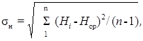
где Hi - глубина неровностей в измеренных впадинах;
п - число измерений (табл.).
|
Длина участка, м |
Число измерений при глубине неровностей макрошероховатости, мм |
||
|
0,3 - 2,0 |
2,1 - 3,0 |
более 3 |
|
|
|
Поверхностная обработка |
|
|
|
1,0 50,0 1000,0 |
1 3 18 |
2 6 36 |
3 10 60 |
|
|
Втапливание щебня |
|
|
|
1,0 50,0 1000,0 |
1 3 9 |
2 3 18 |
3 5 30 |
Коэффициент Сн не должен превышать 0,15 (для отличной оценки качества).
Равномерность распределения щебня по поверхности покрытия определяют с помощью прямоугольной рамки размера 0,10´0,20 м, в пределах которой подсчитывают количество зерен щебня. Измерения повторяют 10 раз на участке длиной 1000 м. По результатам измерений определяют среднее число зерен щебня m в пределах площади, ограниченной рамкой, и среднеквадратичное отклонение результатов отдельных измерений от среднего sm (по аналогии с sн). Коэффициент вариации определяют по формуле
Cm = sm/m.
Он не должен превышать 0,15 (для отличной оценки качества).
НАЗНАЧЕНИЕ ШЕРОХОВАТОСТИ ПО УСЛОВИЯМ УДАЛЕНИЯ ВОДЫ ИЗ
ЗОНЫ КОНТАКТА ШИН С ПОКРЫТИЕМ
(для европейской территории СССР)
Назначение макрошероховатости дорожных поверхностей по условиям удаления воды из зоны контакта шины с покрытием производят в такой последовательности.
1. По графику (рис. 1) для назначенной согласно п. 2.3 минимально допустимой макрошероховатости дорожной поверхности определяется коэффициент гидравлической шероховатости.
Рис. 1. График для определения коэффициента гидравлической шероховатости:
n - коэффициент гидравлической шероховатости; Rz - высота выступов шероховатости
Рис. 2. Номограмма для определения интенсивности расчетного дождя:
а - при N < 1; б - при N > 1
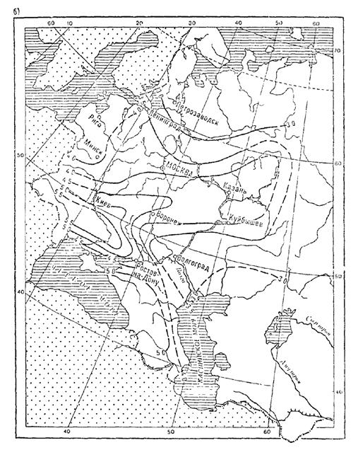
Рис. 3. Картограммы параметров А (а) и В (б)
2. По таблице определяют зону относительной аварийности на мокрых покрытиях, в которой проходит автомобильная дорога.
3. В зависимости от зоны относительной аварийности на мокрых покрытиях определяют вероятность появления расчетного дождя N см. табл. на стр. 40).
4. По номограмме (рис. 2) или по формуле
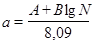
подсчитывают интенсивность расчетного дождя (мм/мин),
где А и В - климатические параметры района проложения дороги - определяются по рис. 3.
|
Зоны относительной аварийности |
Примерные географические границы |
Вероятность появления расчетного дождя N |
|
I |
Севернее линии, соединяющей: Брест-Минск - Витебск-Вышний Волочек-Череповец |
4,00 |
|
II |
От границы I зоны до линии, соединяющей: Львов-Житомир-Киев-Курск-Воронеж- Кузнецк |
2,84 |
|
III |
От границы II зоны до линии, соединяющей: Тирасполь-Николаев-Каховка |
1,75 |
|
IV |
Южнее границы III зоны, включая Черноморское побережье в пределах УССР и Крымский полуостров |
0,7 |
|
V |
Зона включает район Северного Кавказа и Кавказское побережье в пределах РСФСР |
|
|
V-1 |
Первая подзона включает территорию Ростовской обл. (южнее Ростова) и Краснодарского края (включая Черноморское побережье) |
2,1 |
|
V-2 |
Вторая подзона включает южную часть Ставропольского края (южнее линии Изобильный - Светлоград) |
2,7 |
|
V-3 |
Третья подзона включает территорию Чечено-Ингушской и Дагестанской ACСP |
0,8 |
5. По формуле
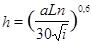
определяют толщину водной пленки на покрытии,
где а - интенсивность расчетного дождя, мм/мин;
L-длина участка стока воды по покрытиям, мм;
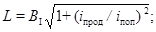
п - коэффициент гидравлической шероховатости поверхности покрытия;
BI - ширина проезжей части для одного направления движения;
iпрод , iпоп - продольный и поперечный уклоны проезжей части;
i - уклон стекания воды по покрытию.
6. По формуле hакт = h - R + 2 определяют толщину активного слоя жидкости, оказывающего гидродинамическое подъемное действие на автомобильные шины (h - полная толщина водной пленки; R - макрошероховатость дорожной поверхности, назначаемая согласно п. 2.3). При R 2 мм £ 2 мм hакт = h.
Рис. 4. График для определения коэффициента К в зависимости от показателя y
7. Скорость начала скольжения автомобильных шин
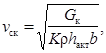
где Gк - вертикальная нагрузка на колесо (с учетом его массы), Н;
r - плотность жидкости, находящейся на покрытии, кг×см2/м4 (для воды - 102, слякоти - 80);
hакт - глубина активного слоя жидкости, м/см;
b - ширина беговой дорожки шины, м;
K - коэффициент, определяемый по графику (рис. 4) в зависимости от показателя
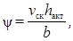
vск - скорость начала скольжения шин.
Уравнение скорости начала скольжения решается подбором: задается скорость, определяется показатель y, коэффициент К и подсчитывается скорость начала скольжения по формуле. Заданная скорость не должна отличаться от расчетной более чем на ± 5 %.
8. Если vск ³ v 85 %-ной обеспеченности, то назначенная в п. 2.3 минимально допустимая макрошероховатость дорожной поверхности удовлетворяет требованиям удаления воды из зоны контакта шины с покрытием. При vск < v 85 %-ной обеспеченности это условие не выполнено. В этом случае назначают новую большую минимально допускаемую макрошероховатость дорожной поверхности и расчет повторяют, пока vск не станет равной скорости движения автомобилей 85 %-ной обеспеченности1 (допускается превышение этой скорости не более чем на 5 - 10 %).
______________
1 Скорость движения автомобилей 85 %-ной обеспеченности на мокрых шероховатых покрытиях определяется по данным натурных наблюдений. Для проектируемых дорог она может быть принята равной: для дорог I категории-90 км/ч; II категории - 85 км/ч.
В случае если соотношение vск ³ v 85 %-ной обеспеченности не достигается при макрошероховатости до 2,5 - 3 мм, необходимо ограничить скорость движения при мокром покрытии на рассматриваемом участке дороги.
ОЦЕНКА ТВЕРДОСТИ ДОРОЖНОГО ПОКРЫТИЯ
Под твердостью дорожного покрытия понимают глубину погружения в материал покрытия конуса заданной формы под определенной нагрузкой и при температуре покрытия 50 °С
Твердость определяют на всех типах покрытия, устроенных с использованием органических вяжущих.
Для определения твердости покрытия служит твердомер ТК1 конструкции Казахского филиала Союздорнии (рис 1). Твердомер состоит из ударника с конической насадкой (ударник Дорнии) и измерительного устройства для замера глубины погружения конуса в покрытие.
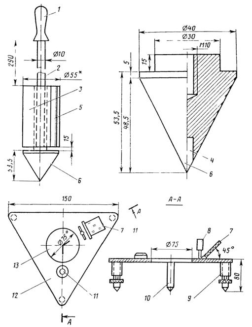
Рис 1 Конструкция твердомера дорожных покрытий:
1 - рукоятка; 2 - ударник; 3 - груз ударника; 4- ролик; 5 - линейка; 6 - измерительный конус; 7 - зеркало; 8 - визир; 9 - регулируемая опора; 10 - опора; 11 - уровень; 12 - измерительное устройство; 13 – отверстие
___________
* Контрольный размер по подбору нагрузки весом 20 Н
Примечание. Для предотвращения смятия конуса в его наконечник впрессован ролик 4 диаметром 5 - 7 мм от роликового подшипника.
Для определения твердости в выбранной точке дорожного покрытия устанавливают горизонтально измерительное устройство 12. В отверстие 13 устанавливают вертикально ударник 2 с конической насадкой. При этом необходимо соблюдать зазор между грузом ударника 3, на котором нанесены отметки через 1 мм, и стенками отверстия 13. Перед началом измерения снимают отсчет по линейке 5, нанесенной на грузе ударника (для удобства целесообразно использовать зеркало 7, установленное на измерительном устройстве под углом к горизонтальной площадке). После сбрасывания груза ударника в количестве 10 раз снимают второй отсчет. Разность отсчетов определяет глубину погружения конуса в покрытие (мм), которая характеризует твердость слоя материала при фиксированной температуре покрытия. Независимо от длины обследуемого участка дороги производится не менее 20 измерений с регистрацией средней температуры покрытия за период полевых работ. Точки для измерения назначаются через равные расстояния с чередованием полос наката (первая точка выбирается случайно).
Среднее значение показателя твердости hТ на участке приводят с использованием номограммы (рис. 2) к расчетной температуре 50 °С. По полученному значению h50 назначают оптимальный для одиночной поверхностной обработки размер щебня:
Показатели твердости при расчетной
|
температуре h20, мм |
£ 15 |
16 - 20 |
21 - 30 |
|
Фракция щебня, мм |
5 - 10 |
10 - 15 |
20 - 25 |
|
|
10 - 15 |
15 - 20 |
20 - 40 |
Примечание. Щебень фракции 20 - 40 мм допускается использовать для устройства поверхностных обработок на покрытиях из битумоминеральных смесей при h50, близком к 30 мм, и на участках с продольным уклоном более 50 ‰.
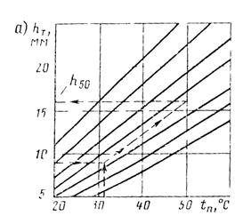
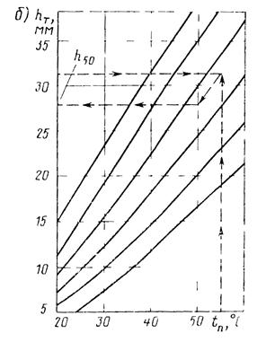
Рис. 2. Номограмма для приведения показателя твердости покрытия к расчетной температуре 50 °С:
а - для покрытий из горячих асфальтобетонных смесей; б - для покрытий из холодных битумоминеральных смесей.
Стрелками показан порядок пользования номограммами
ПРИГОТОВЛЕНИЕ РЕЗИНОБИТУМНОГО ВЯЖУЩЕГО
Резинобитумное вяжущее (РБВ) приготавливают на стационарной установке, технологическая схема которой показана на рисунке.
Основными технологическими узлами установки являются реактор-мешалка для довулканизации резиновой крошки; реактор-мешалка для приготовления РБВ; дозаторы; устройства для подачи исходных материалов к дозаторам и мешалкам; устройства для выгрузки РБВ и промывки емкостей.
Все элементы коммуникаций установки по производству РБВ (битумопроводы, насосы, краны и т.д.) должны быть обеспечены системой паропрогрева.
Технологический процесс производства РБВ включает приготовление эластомера дорожного, дозирование составляющих РБВ в требуемых количествах и смешивание битума с эластомером. Эластомер дорожный приготавливают по следующей технологии.
Резиновую крошку (см. рисунок) из приемного бункера 1 по ленточному транспортеру 2 подают через дозатор 3 в реактор-мешалку 5. Одновременно с резиновой крошкой в мешалку из дозатора 4 подают сланцевое масло. Общая масса поданной в реактор-мешалку резиновой крошки и сланцевого масла должна быть не более 4000 кг.
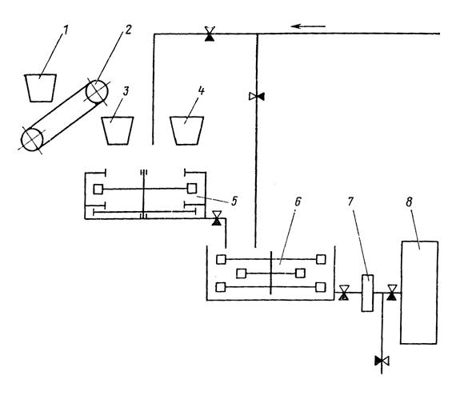
Технологическая схема приготовления дорожного эластомера
Резиновую крошку и сланцевое масло в реакторе-мешалке перемешивают в течение 3 - 4 ч при температуре 180 - 210 °С до получения мелкодисперсной массы. Во время перемешивания смеси (т.е. процесса термомеханической девулканизации резиновой крошки) необходимо строго следить за системой обогрева и не допускать перебоев в ее работе, обеспечивая тем самым указанные пределы температурного режима.
После завершения процесса девулканизации резиновой крошки в реактор-мешалку 5 через дозатор 3 подают требуемое количество отвердителя (см. п. 5.55 настоящих Указаний). Смешение компонентов производят в течение 1 - 1,5 ч при температуре 170 - 190 °С.
При приготовлении РБВ сначала в реактор-мешалку 6 из битумного котла подают обезвоженный и нагретый до температуры 150 - 160 °С битум. После чего включают мешалку, из реактора 5 в реактор 6 подают требуемое количество эластомера дорожного. Полученную смесь перемешивают в течение 0,5 - 1 ч при температуре 150 - 170 °С.
Точность дозирования компонентов при приготовлении резинобитумного вяжущего не должна превышать ± 3 %.
Количество битума и эластомера дорожного, необходимого для приготовления РБВ соответствующей марки, устанавливают по табл. 5.9 и контролируют посредством датчика, установленного в реакторе-мешалке 6.
Приготовленное вяжущее из реактора-мешалки 6 перекачивают посредством устройства 7 в битумный котел 8.
Если при приготовлении резинобитумного вяжущего часть эластомера окажется неиспользованной, то ее из реактора-мешалки 5 перекачивают в реактор-мешалку 6, после чего производят промывку реактора 5.
Промывку реактора-мешалки 5 производят битумом при температуре 150 - 170 °С с помощью устройства 7 после завершения каждого цикла приготовления эластомера.